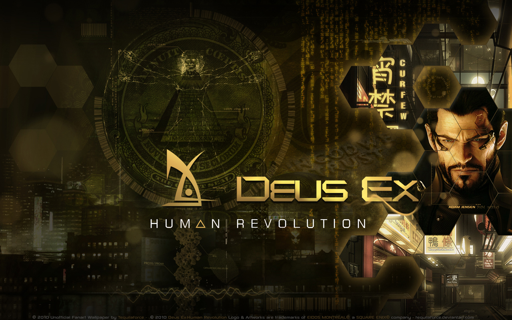

Deus Ex Human Revolution
Written by Tyson Young
Overview
Set in a futuristic world where human Limb replacement and augmentation are on the rise, the protagonist (Adam Jensen) is hired on at Sarif Industries as the head of security after having left SWAT. Sarif Industries is a leading medical science corporation that is responsible for bettering the mechanics of Human Augmentation. The dirty grungy futuristic themes colored in lenses of golds and browns are pleasing to the eye and gameplay is something that will beg you to play the title over and over again. This type of graphic quality is often referred to as "Cyberpunk" much like its sister "Steampunk" (Steampunk games include Bioshock Infinite, Final Fantasy VII, Thief, ETC) but more geared towards an electric future rather than a steam one. There are limited titles that have taken on the "Cyberpunk" idea; but when a company like Eidos Montreal adopts into it, the idea blooms into something fantastic.
The title Deus Ex Human Revolution is actually the Third installment of the series, but set as a prequel to Deus Ex, and Deus Ex the Invisible War. Don't fret though if you are a new comer to the series, there is no need to play the other titles. The only things you would miss out on are the Easter Eggs occasionally hidden throughout the game in eBooks or Newspaper articles. One of the writers of the series went on to publish a book called "The Icarus Effect" to help solve some of the conspiracy theories. It only means that there is even more content to come in the future.
The Icarus EffectIn the game you find yourself having to make decisions, which will ultimately change how the ending of the game will be for you. There are technically four different ways to end the title (Not including dying but honestly that isn't a real ending), but many of the side quests and other objectives hidden throughout will only make you want to look for more answers and see all the possible endings. Human Revolution was released August 23, 2011 and on October 13 2011 Download Content titled 'The Missing Link' was released. Luckily, the Directors Cut includes the DLC so you don't have to fret with needing to spend the extra money. Included in the Director's Cut are many fixes to the game that the community repeatedly asked for. Eidos Montreal listened to their fans and added content that was much needed when facing difficult boss battles. They also included higher graphic quality on some scenes which just makes the game even better all around.
Gameplay
Human Revolution takes on a new idea of mixing Role Playing Game elements with First Person Shooter. You are given many choices throughout, each objective you complete you are rewarded with XP which earns you Praxis Points. A big point of the game though is that you don't have to rely on those level ups for Praxis, unlike traditional Role Playing games. You can actually purchase them from Limb Clinics with credits you earn from missions or looting from corpses. These Praxis Points are used to upgrade the Augmentations that Jensen has including self-cloaking, better aim stability, and the ability to punch through walls, or even take down baddies without guns. Don't fret about the Creds or XP though, you can find Praxis Points hidden around rooms if you are willing to dig through desk drawers or climb into high security areas. Just don't get caught or you can find yourself running out of bullets if you get in a dog fight with the Chicago Police.

There are two main types of gameplay. You have Stealth, which I prefer because I love reading more into the lore of Deus Ex, or you have brutal strength. When you are faced with a decision on taking down villains you can either hack into security cams or take over gun turrets, or you can charge at them with heavy machine guns or rocket launchers. The choice really is yours, and either way has its own challenges. If you decide to go the strength route you are rewarded higher XP for speedy take downs. Stealth players are rewarded a merciful soul if they don't kill the baddies. There is also a bonus reward if you can go through the entire zone without being spotted once, and at the end of the game there is a secret achievement you unlock if you weren't spotted the entire game (Boss Battles are excluded of course).
There are a total of 59 achievements you can find yourself hunting down, some are very easy to do while others take time and practice to actually achieve. With the Directors Cut there is an option for New Game+ meaning that you can take your Praxis Points earned and play through the game again with a bit of a boost at the start. Eidos also fixed some of the boss fights, so those players that chose stealth weren't forced into moving into brutal fighting styles. The first boss fight was probably the toughest before the new release. I found myself playing it over and over again and was quite frustrated with how it was not friendly for the stealthy fighters. However, with the Directors Cut those, problems were completely fixed and made the game even more enjoyable for all players.

In Human Revolution there is a mini game included. It is actually a part of the 'Hacking' system that was included with Jensen's augmentations. You can upgrade to help you get through the more difficult objects to hack, but if you don't want to toy around with the mini game you can always find a wall to break through if you went with strength over stealth. You will never be forced into something in the game that you just don't find entertaining. Along with the mini game, you can even augment your speech pattern recognition, allowing Jensen to guide conversations to his advantage and giving you more clues or even weapons that help you in the future.
If you get stuck with which augmentations to get there is actually a rather lengthy Wikia site that a group of followers have put together
Deus Ex WikiaWii U Enhancements
The Wii U release of Deus Ex Human Revolutions was something magnificent. The touch Screen tablet helps you navigate quickly through the hacking game, and even helps with inventory management and maps to see where people are hiding at. You are even given the option to leave yourself notes on maps with the gamepad so if enemies hide behind walls more often you can be sure to avoid that spot. Also if you are worried about running into that blasted land mine again you can warn yourself by leaving a voice note or a written note.

Another Enhancement is something called "Smart Vision" and it is only available to those with the Wii U as well. You can actually use your Praxis to purchase the Tactical Pattern-Recognition System Augmentation, and when you lift the gamepad up in front of the television you can see through walls and tell where someone is hiding at when in the middle of a tough dog fight.
Summary
In short this game is a perfect marriage of RPG and First Person Shooter. I have played it through over twenty times, and purchased it on Steam, OnLive, and now for my Wii U. When I add up the hours spent on the game it is well over 100. With the different difficulties you can cruise through easily your first time and use the New Game+ to your advantage on a second play through, or if you are like me you can just get into the dirt of it all and try your skills out. If you find yourself reading through personal emails of the NPCs for hours on end or taking down Hong Kong's Belltower Associates, you are only in the thick of it all.
Gameplay
4.2 out of 5
Graphics
4.6 out of 5
Replayability
4.5 out of 5
Overall
4.43 out of 5
Posted November 15th, 2013